Cyclists and Pedestrians: Severe, but a Small Share
~1 min · narrated

When a motorcyclist, cyclist or pedestrian is involved, 20–31% of worksite crashes are fatal or serious – against about 5% for cars. But crashes involving a cyclist or pedestrian account for 10 of the 158 deaths (6%), and worksites do not make those crashes more severe than elsewhere on the network.
Why it still matters
Counts don’t measure exposure: pushing cyclists into a live lane is high risk for every person who passes
Cyclist falls on plate edges, ramp lips and loose chip rarely reach police data
What it means
Cyclist and pedestrian provision stays non-negotiable
But most of the death toll is open road, night and heavy vehicles
Source: Sela Civil Advisory, SELA-RPT-2026-006 Who Gets Hurt at Our Worksites (12 Nov 2026), from NZTA Crash Analysis System open data, Jan 2006 – Nov 2026.
What about cyclists and pedestrians? When a motorcyclist, cyclist or pedestrian is involved in a worksite crash, twenty to thirty-one per cent of those crashes are fatal or serious. For cars, it's about five per cent. But crashes involving a cyclist or pedestrian make up only six per cent of worksite deaths. Two cautions, though. Crash counts don't measure exposure, so pushing cyclists into a live lane is high risk for every person who passes. And falls on plate edges, ramp lips and loose chip rarely reach police records. So their provision stays non-negotiable, even though most of the death toll sits elsewhere.